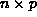
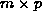
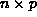
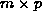
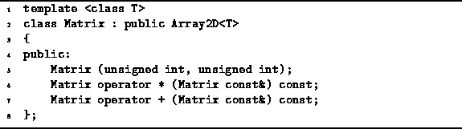
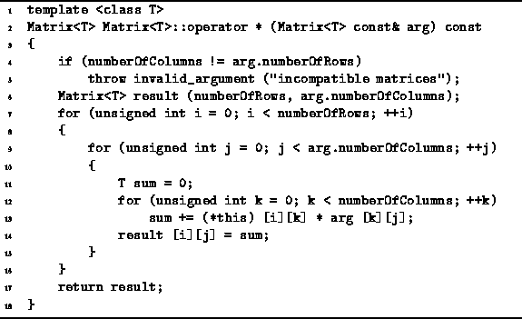
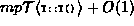
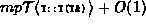
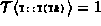

Data Structures and Algorithms
with Object-Oriented Design Patterns in C++
Data Structures and Algorithms
with Object-Oriented Design Patterns in C++
Given an  matrix A
and an  matrix B,
the product C=AB is an  matrix.
The elements of the result matrix are given by
matrix A
and an  matrix B,
the product C=AB is an  matrix.
The elements of the result matrix are given by
Accordingly, in order to compute the produce matrix, C, we need to compute mp summations each of which is the sum of n product terms.
To represent matrices we use Matrix<T> class
shown in Program  .
This class simply extends the Array2D<T> class
by adding declarations for the various operations on matrices.
.
This class simply extends the Array2D<T> class
by adding declarations for the various operations on matrices.

Program: Matrix<T> Class Definition
An algorithm to compute the matrix product
is given in Program .
The algorithm given is a direct implementation of Equation .

Program: Matrix<T> Class Multiplication Operator Definition
The matrix multiplication routine in Program
overloads the multiplication operator, operator*,
as a member function of the Matrix<T> class.
As a result it takes a single argument, arg,
which is a const reference to a matrix.
The routine computes a result matrix which is the produce
of *this and arg.
In C++ there are two ways to overload operator*. The first is to define a non-member function
Matrix<T> operator * (Matrix<T> const&, Matrix<T> const&);which takes two arguments, both of them const references to Matrix<T> objects, and produces a result of type Matrix<T>. The second way is to declare a const member function of class Matrix<T> called
Matrix<T> Matrix<T>::operator * (Matrix<T> const&) const;which takes as its single argument a const reference to a Matrix<T> class object.
There are pros and cons associated with each approach. The former approach requires the function to be declared a friend of the Matrix<T> class and any of the classes from which it may be derived if access to the protected members of those classes is needed in the implementation. On the other hand, in this approach, the operands are treated symmetrically with respect to implicit type coercion .
The latter approach has been chosen for the implementation of the matrix multiplication operator since Matrix<T> is a derived class and the implementation of the operator requires access to protected members of the base class.
To determine the running time of Program ,
we need to make some assumptions about the running times for
assignment, addition, and multiplication of objects of type T.
For simplicity, we shall assume that these are all constant.
We will also assume that the dimensions of the matrices to be multiplied
are  and .
and .
The algorithm begins by checking to see that the matrices to be multiplied have compatible dimensions. I.e., the number of columns of the first matrix must be equal to the number of rows of the second one. This check takes O(1) time in the worst case.
Next a matrix in which the result will be formed is constructed (line 6). The running time for this is . If T is one of the built-in types whose constructor does nothing, this running time reduces to O(1).
For each value of i and j, the innermost loop (lines 12-13) does n iterations. Each iteration takes a constant amount of time, assuming assignment, addition, and multiplication of type T objects each take a constant amount of time.
The body of the middle loop (lines 9-15) takes time O(n) for each value of i and j. The middle loop is done for p iterations, giving the running time of O(np) for each value of i. Since, the outer loop does m iterations, its overall running time is O(mnp).
Finally, the result matrix is returned on line 17.
The return involves a call to the
copy constructor for Matrix<T> class objects.
In fact, no such constructor has been declared for Matrix<T>
class objects.
The default behavior of C++ in this case is to create a
default copy constructor
for Matrix<T> class objects.
In C++ the behavior of the default copy constructor
for objects of class X is to call
the copy constructor for the each of the base classes
from which the class X may be derived
and then to copy the data members of X
one-by-one using their respective copy constructors.
Since the Matrix<T> class is derived from the Array2D<T>
class and since the Matrix<T> class has no data members,
the running time of this default copy constructor is equal to the
running time of the copy constructor for Array2D<T> class objects
(see Section ).
Hence the running time of line 18 is .
Assuming that , we get O(mp).
In summary, we have shown that lines 4-5 are O(1); line 6 is O(mp); lines 7-16 are O(mnp); and line 17 is O(mp). Therefore, the running time of the canonical matrix multiplication algorithm is O(mnp).
 Copyright © 1997 by Bruno R. Preiss, P.Eng. All rights reserved.
Copyright © 1997 by Bruno R. Preiss, P.Eng. All rights reserved.